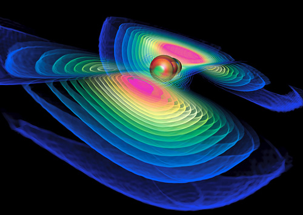
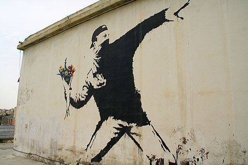

Image credit: Werner Benger, Zuse-Institut Berlin
Is certainty overrated?
You may have heard by now that scientists announced the discovery of gravitational waves, helping to prove Einstein's theory of relativity. He shook up the world of physics when his theory debunked Newton’s view previously held as certain. The announcement is the "first direct evidence of gravitational waves, the ripples in the fabric of space-time that Einstein predicted a century ago. It completes his vision of a universe in which space and time are interwoven and dynamic, able to stretch, shrink and jiggle."
The discovery of these waves is just the latest in a long line of scientific and religious discoveries that have served to knock off the pedestal of certainty the idols of absolutism.
Last night, around The Table - certainty as overrated was the question that began our conversation, which led to the possibility of uncertainty being a gift. We reflected on the poignant poem by modern day Israeli poet, Yehuda Amichai, "The Place Where We Are Right".
From the place where we are right
Flowers will never grow
In the spring.
The place where we are right
Is hard and trampled
Like a yard.
But doubts and loves
Dig up the world
Like a mole, a plow.
And a whisper will be heard in the place
Where the ruined
House once stood.
Flowers will never grow
In the spring.
The place where we are right
Is hard and trampled
Like a yard.
But doubts and loves
Dig up the world
Like a mole, a plow.
And a whisper will be heard in the place
Where the ruined
House once stood.
"But doubts and loves dig up the world" - what a beautiful way to speak of the gift of uncertainty. Like a mole rooting around in our beliefs and dogmas and perspectives, doubts & loves uproot the certainties that prevent wisdom’s fresh flowers from poking through hard ground.
As a community of doubters + disciples together, we're on a journey this Lent to explore the gifts of the dark wood: a metaphor for those times & places in our lives when little to nothing makes sense any more. We are setting aside Lent to take stock, to reorient.
Awakening in the dark wood shows us that certainty may not be on the only way of knowing. Gregory of Nyssa was a Christian thinker, philosopher & theologian in the 4th Century who phrased the pursuit of knowledge like this:
“Concepts create idols; only wonder understands
anything. People kill one another over idols. Wonder
makes us fall to our knees.”
anything. People kill one another over idols. Wonder
makes us fall to our knees.”
What if we used Lent to reorient in the direction of wonder? The gift of uncertainty invites discovery.
The scripture we contemplated around The Table last night is from a letter the Apostle Paul wrote to a gathered community in the city of Corinth. Earlier he had reminded them that “knowledge puffs up, but love builds up.” He goes on to reflect about the spectrum of certainty/uncertainty like this:
“Love never gives up, never loses faith, is always
hopeful, and endures through every circumstance.
Prophecy and speaking in unknown languages and
special knowledge will become useless. But love will
last forever! Now our knowledge is partial and
incomplete, and even the gift of prophecy reveals only
part of the whole picture! But when the time of
perfection comes, these partial things will become
useless.
When I was a child, I spoke and thought and reasoned
as a child. But when I grew up, I put away childish
things. Now we see things imperfectly, like puzzling
reflections in a mirror, but then we will see everything
with perfect clarity. All that I know now is partial and
incomplete, but then I will know everything completely,
just as God now knows me completely.
Three things will last forever—faith, hope, and love
—and the greatest of these is love”
(1 Corinthians 13:7-13, New Living Translation)
hopeful, and endures through every circumstance.
Prophecy and speaking in unknown languages and
special knowledge will become useless. But love will
last forever! Now our knowledge is partial and
incomplete, and even the gift of prophecy reveals only
part of the whole picture! But when the time of
perfection comes, these partial things will become
useless.
When I was a child, I spoke and thought and reasoned
as a child. But when I grew up, I put away childish
things. Now we see things imperfectly, like puzzling
reflections in a mirror, but then we will see everything
with perfect clarity. All that I know now is partial and
incomplete, but then I will know everything completely,
just as God now knows me completely.
Three things will last forever—faith, hope, and love
—and the greatest of these is love”
(1 Corinthians 13:7-13, New Living Translation)
Wondering leads us to give-up the patterns and habits that prevent clarity. Wondering invites us to add the pursuits and practices that help ourselves and our world to flourish. Seeing the whole picture comes rarely, and even then, only with hindsight. Banking on certainty to the point of sacrificing growth leave us wilting. Practicing faith, hope & love causes us to bloom.
Just like those gravitational waves confirm Einstein’s century old suspicions about the makeup of the universe, and just like Gregory of Nyssa pointed out more than 1600 years ago, and just like Paul hints at in his letter: space and time are interwoven and dynamic, able to stretch, shrink and jiggle.
Let’s be people of wonder, people who allow our doubts and loves to dig up the world so that faith, hope & love can sprout.

Banksy Rage (grafiti artist) "Flower Thrower" - Jerusalem, Israel
Here’s to the stretching, shrinking, jiggling gravitational waves of uncertainty,
Pastor Libby